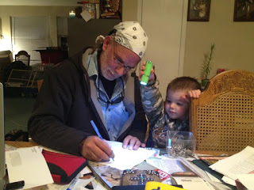

 |
Behold the man who terrorizes the Sunriver Police Department: Bob Foster and his grandson. |

What does it take to be officially designated a “stalker” in the State of Oregon?
In a recent decision the State Court of Appeals ruled that a bully can subject a terrified elderly woman to a years-long campaign of harassment, intimidation, and physical violence without being saddled with a stalking protection order (SPO). Two years ago, the same court ruled that an individual can commit repeated acts of property damage, coupled with physical assaults and even an explicit death threat, and not qualify for stalker status.
Apparently, the only guaranteed way to earn the unwanted
title of “stalker” in the Beaver State is to criticize the local police and the
corrupt municipal cabal it serves. That’s a reasonable inference to draw from
the bizarre experience of Sunriver, Oregon resident Robert Foster, whose stalking case involving the
Sunriver PD and the Sunriver Owners Association (SROA) is scheduled for
trial on Tuesday, April 24. [Update: The trial has been rescheduled -- again -- for August 21.]
Roughly two years ago, Foster – a well-established and
widely respected local businessman who operates a hot tub service company – was
designated a stalker in an ex parte proceeding. Since that time he has been
arrested twice for the supposed crime of coming within eyeshot of one of the
timid, shivering creatures who supposedly live in bladder-loosening fear of
Foster – Sergeant Joseph Patnode and Officer Kasey Hughes.
Foster has never said or done anything to harm either of
those proud, intrepid members of the Brotherhood of Coercion. Prior to the
arrests made pursuant to the spurious stalking protection order, Foster had no
criminal record of any kind. Over the past two years, Foster has been treated
as a prisoner in his own hometown. At one point last fall he was driven into
out-of-state exile for three months to avoid arrest as he
prepared for a January 26 court date.
Rather than convening the trial on the appointed time at the
designated location, the presiding Judge conducted a series of sidebar
conferences with the parties in her chambers while dozens of people waited for
several hours in a crowded, poorly ventilated courtroom. In the far corner of
the small room could be seen a poorly-disguised Detective from the Deschutes
County Sheriff’s Office, who furtively took photographs of everyone who had gathered
to support Foster.
| A typically spectacular Sunriver vista. |

In the middle of the courtroom had assembled practically the
entire Sunriver Police Department. All of them but Hughes and Patnode were in
uniform and wearing body armor. They were also wreathed in the unmistakable
aroma of pure, unfiltered fear. This shouldn't
surprise us: These are people who profess to be terrified by the mere sight of
a skinny, mild-mannered, unarmed, 51-year-old businessman whose only weapon is
a finely whetted wit.
Bob Foster and his daughter,
Rebecca Kossler, were as eager for their day in court as the Sunriver PD was to
avoid it – a fact that says everything we need to know about the relative
merits of their respective cases. If Foster's accusers were telling any portion
of the truth, they wouldn't be exhausting every dilatory tactic known to man in
an effort to avoid testifying under oath in an adversarial setting.
In defiance of State Law, the
original SPO was granted without a mandatory hearing at which Foster could
contest it. His court appearance on January 26 was the first time he was able
to speak for himself in a judicial proceeding. Rather than permitting Foster
the opportunity to tear apart the specious case against him, the presiding
judge attempted to fashion a modified order under which Foster would be granted
the supposed privilege of a judicial hearing before the “victims” – Officers
Patnode and Hughes – could arrange for his arrest.
The Sunriver PD faction refused
to drop the charges against Foster because, as they explicitly told the judge,
they were concerned that he would sue the department for the
taxpayer-subsidized harassment he has experienced.
Assuming that his persecutors
could be held personally liable, rather than socializing the costs of their criminal
foolishness, Foster would be entitled to sue them into penury: During the past
two years he has spent more than $200,000 contesting the patently false and unambiguously
malicious accusation that he had been stalking the local police.
In sworn pre-trial depositions, neither of the “victims” of
Foster’s purported stalking was ever to describe an instance in which he did or
said anything so much as suggesting violent intent. The same is true of former Sunriver Police
Chief Michael Kennedy, who – as we will see – has
since lost his position and offered several key disclosures regarding what
can only be called a criminal conspiracy against Foster.
Foster’s supposed victims are armed individuals claiming a
license to use lethal force at their discretion – and who supposedly dissolve
into puddles of petulant panic at the sight of him. Pedro Erazo’s victim, by
way of contrast, was a senior citizen named Kathryn Reitz, whom he repeatedly
harassed, threatened, and physically assaulted at the Goodwill convenience
store in Hillsboro, Oregon.
Over the course of two years, Erazo and his cohorts would
descend on the thrift store in pursuit of severely discounted books to re-sell
online. Three times a day, employees would wheel out large bins full of
merchandise, including books. Heedless of rudimentary courtesy, Erazo’s group
would shove aside other shoppers – and, on occasion, store employees – in order
to scoop up armloads of books whose barcodes would be read by a handheld
digital scanner. Any potentially valuable volumes would be piled in a cart.
Reitz attracted Erazo’s malign attention by voicing disgust
over his behavior. He retaliated by following her around the store, barraging
her with insults and threats.
“You should be afraid of me,” Erazo sneered at the terrified
64-year-old woman. “They’re not going to stop me. I can do whatever I want.”
As it happens, the thrift store chain’s management did stop him: Erazo is now banned from
40 stores in Northwest Oregon and Southwest Washington. At Reitz’s request,
Washington County Circuit Court Judge Donald Letourneau imposed a stalking
order against Erazo, who was one of several people to complain about the
tactics he employed.
Another frequent shopper who testified on behalf of Reitz
recalled that Erazo had instructed his goons to “shadow me, follow me. If I
would go here, then [he told them] `go with her,’ and then a person would come
and … just follow me wherever I would go … stand right next to me, elbow me,
make it incredibly uncomfortable.”
Despite the fact that Erazo and his gang had clearly engaged
in aggressive and violent behavior, the Oregon
Court of Appeals overturned the stalking order.
Oregon state law requires at least two “contacts” in which the victim would
have a “reasonable apprehension” regarding his or her physical safety. While
Erazo had physically assaulted Reitz on one confrontation, and assailed her
with insults and threats during numerous others, a second violent “contact”
would be necessary in order for his behavior to qualify as “stalking” under
state law.
In a similar case from 2010 (Swarringim
v. Olson), the Court of Appeals dealt with a neighborhood dispute that
escalated to property damage (vandalism to the petitioner’s home and
automobile) as well as violence and death threats. In one confrontation,
Swarringim’s 14-year-old son was knocked flat on his back by an Olson’s
18-year-old son, Matthew, who also warned that he knew people “who will slit
[the boy’s] throat.”
Stipulating to the facts as related by the Swarringim family,
the Court of Appeals threw out the stalking order, maintaining that the
evidence was insufficient to establish that the actions of Olson and his son
had caused “reasonable apprehension for personal safety” on the part of the
victims.
Obviously, it is difficult to make a stalking order stick in
the State of Oregon, even when the subject of the order has committed acts of
criminal violence and made explicit death threats. The designation of “stalker”
is reserved for truly dangerous people like Bob Foster, whose sole offense was
to make the police uncomfortable.
Foster was a prominent opponent of both the SROA and the
proposed Special Services District (SSD), which was created in 2008 and
inflicts an annual cost of several million dollars on Sunriver home owners.
Sunriver – although a lovely place -- isn’t really a town;
it is a shopping mall with a thyroid condition. The Census Bureau considers it
to be part of nearby Bend. Until 2008, its streets were not considered “public
conveyances,” but rather private roads accessible to the public. This meant
that the Sunriver PD couldn’t write traffic citations, much to the frustration
of those who coveted the revenue.
In 2007, the SROA successfully lobbied Oregon State Rep.
Gene Wisnat to sponsor H.B. 3445, a bill custom-tailored for Sunriver
that extended police "authority" to include roads and streets on
"premises open to the public that are owned by a homeowners
association…." The following year, the SROA enacted a special
multi-million-dollar tax assessment for a special service district (SSD) it had created in 2002. The SSD
now included a fully functional police department, which immediately became a
huge nuisance to local business owners and the visitors upon whom the local
economy depends.
| Strategy session: Sunriver officers during break in the Jan. 26 hearing. |

“The
police constantly harassed people in my parking lot,” recalled Connie
Hutcherson, former owner of RJB’s restaurant, in an interview with a private investigator. “They would do drive-throughs looking for DUIs…. I
lost a lot of business because of them. Customers would tell me, `We’d love to
come in more, but we’re scared.’”
On
more than a few occasions, an aggravated Hutcherson confronted the officers in
her parking lot. “They didn’t care for me much,” she wryly observed.
In
her interview with the investigator, Danyl Dahl described a March 2009 episode in which
the deli delivery van she was driving was stopped by two Sunriver officers who –
in response to a trivial traffic infraction – approached her with guns drawn
and faces drawn taut with irrational rage.
“Do
you want to get arrested today?” one of them snarled at the perplexed and
terrified woman. “Do you want to go to jail today?”
“These
people were hired by the Sunriver Owners Association,” Dahl pointed out. “They
think they can do anything they want.”
The
Sunriver police were just as inhospitable to visitors – something Shawn
Vickers, who was stopped for speeding, witnessed first-hand. During the traffic
stop, a tourist riding a bicycle stopped and began taking photos of the police
vehicle.
“The
officer lost control,” Vickers related to the investigator. “He was like, `Halt! You do
not have my permission to take my picture! Freeze! Do not move!’ And
then he … was very agitated, he did not know what to do…. At some point, I
thought he was going to draw his gun.”
“Are
you kidding me?” exclaimed an astonished Vickers, who was still seated behind
the wheel of his vehicle. This provoked another outburst: “He was like,
`Freeze! Put your hands where I can see them! Do not move!’ He moved about 6-7
feet from me. He never turned his back to me.” As it happened, the bicyclist
was a visiting sheriff’s deputy from Los Angeles County who collected
photographs of police vehicles. Upon learning of the tourist’s identity, the
officer regained at least a portion of his composure. For several anxious
moments, however, “I thought this guy was going to lose it and draw down on one
of us,” Vickers reports.
A
Sunriver resident who identified herself only as “Vicki” told the investigator about asimilar incident she witnessed in October 2010 involving three Sunriver police
officers who swarmed a car containing an elderly couple “with guns drawn and
pointing at them.” The elderly couple weren’t armed fugitives; at worst they had committed a minor traffic infraction. Yet they were
threatened with lethal violence by a police department perversely determined to
manufacture work for itself.
April
Gossling, who operated the Villagio Espresso shop, recalled anApril 2011 incident in which three Sunriver Police officers pulled over a group
of teenagers who were found with alcohol and marijuana. She overheard the
police “threatening them – telling them how much trouble they were in, and how
they needed to report to them” regarding drug and alcohol use by other kids.
One
of the officers wasn’t satisfied merely to cultivate a group of informants: He
prevailed on one of the underage girls to supply him with her phone number in a
conversation involving the suggestion of “sexual favors,” Gossling testified.
During this lengthy encounter, Gossling overheard an emergency call on the
police radio that was blithely ignored by the officers.
Unremitting harassment by the
Sunriver PD led at least one resident to flee the town.
“I was a
victim of such continuous harassment by the Sunriver PD that I eventually
simply moved,” former Sunriver resident Jared Lewis told Pro Libertate. “I was
so fearful of them every time I left my house…. I was routinely followed,
harassed and stopped by Sunriver PD for absolutely no reason for a period of
three years.”
In some cases, Lewis reports, Officer Kasey Hughes – one of
the two gallant defenders of the public weal who filed a stalking order against
Foster – followed him “for miles at a time before stopping me.” In one
particularly crowded day, Lewis was stopped four times by four different
Sunriver PD officers.
The most disturbing
aspect of this was that after dozens of stops per month, I finally reached a
point of approaching the (now former) chief to complain and was not only
rebuffed, but it was revealed to me by the chief that none of my stops was recorded. He essentially told me that his
officers had never stopped me and that I was a liar.”
Obviously, many Sunriver residents recognized that the police department – and the quasi-private municipal cabal running it – constituted a large, festering problem. However, only Bob Foster was willing to confront those responsible for it.
Obviously, many Sunriver residents recognized that the police department – and the quasi-private municipal cabal running it – constituted a large, festering problem. However, only Bob Foster was willing to confront those responsible for it.
| Sharp-Dressed Man: Bob Foster with his Stratocaster. |

In public meetings, Foster denounced the Service District as
an unnecessary expense that consolidated the grip of the village’s insular
ruling elite. He proposed abolishing the District and contracting with nearby
La Pine for emergency services – an arrangement that would have saved Sunriver
home owners a great deal of money and reined in the power of the SROA.
In reprisal, the SROA concocted a plot to silence the
civic-minded businessman. This is not a matter of speculation: The key player
in that conspiracy, former Sunriver Police Chief Michael Kennedy, has
provided an admirably candid summary of that conspiracy in a March 8 letter to
the Deschutes County Commission.
Kennedy wrote that letter to file a grievance with the
Commission after being fired on February 16 in what he described as an act of
retaliation by a corrupt and unaccountable municipal government whose official dealings are as opaque as the proceedings of the North Korean Politburo.
“The Sunriver Owners Association has pressured the Sunriver
Police Department as well as me to perform unlawful and unethical acts … which
we have refused,” wrote Kennedy. “It is my firm belief that my firing was a
direct result of my refusal to act on their unethical requests.”
The conspiracy to railroad Bob Foster on “stalking” charges
was prominent among those “unethical” acts to which Kennedy refers.
After growing weary of what was described as Foster’s
“unwanted attention,” Kennedy approached the SROA and requested “that Bob
Foster be trespassed from the SROA/Police building,” the former Chief recalled.
This would mean that Foster wouldn’t be able to attend public SROA meetings, or
file a police complaint, without being subject to arrest.
Kennedy’s suggestion, if act on, would have been an act of
petty, officious retaliation, but it wasn’t a criminal conspiracy. What the
SROA suggested does meet that description.
“After meeting with the board, the SROA board president, Bob
Nelson, and Bob Wrightson, who are both also on the Service District board,
came to my office and told Sergeant Patnode and I [sic] that they would not be
trespassing Bob Foster…. [H]owever, their legal counsel had a better
solution….. A short time later, our legal counsel advised that we would be
filing a stalking order against Bob Foster…. At the request of legal counsel, I
contacted Sergeant Patnode and Officer Kasey Hughes to see if they would be
willing to have the stalking orders filed on their behalf. They subsequently
agreed and the stalking orders were filed.”
| Kennedy before the falling-out. |

Unfortunately for the SROA, Bob Foster “didn’t immediately
roll over,” Kennedy recalls. Instead, he gave notice that he intended to file
lawsuits against the SROA and the Service District – which, as Kennedy points out,
are essentially the same entity.
“The current management structure of the Sunriver Service
District puts entirely too much control in the hands of a small segment of the
community,” Kennedy explained to the County Commission. “The end result is that
a private home owners association has
effective control over the operations and funds of a public taxing district.”
(Emphasis added.) That same entrenched cabal uses the Sunriver PD as its
enforcement arm and revenue-extraction mechanism.
Seeking to limit the potential damage from the lawsuit, the
SROA “appeared to be attempting to withdraw Service District protection from
the two officers” it has used to file stalking orders against Foster.
In an executive session, SROA Board President Nelson “said
something to the effect of `Why is the Service District financing these
stalking orders, when this is clearly a civil matter between these two officers
and Bob Foster,” Kennedy recalled. “I reminded him that we had asked those
officers if they would be willing to file the stalking orders at the request of
legal counsel…. I advised him that if asked, that is how I would have to
testify in court. After that, SROA appeared to further distance themselves from
the case, even though they were the ones
who initially started us down the path of filing the stalking orders.”
(Emphasis added.)
In those paragraphs, Kennedy made at least three critical
admissions:
*The private SROA, in defiance of conflict-of-interest laws,
controls a public taxing district and the police department – just as Bob
Foster had predicted it would.
*The stalking case against Foster was instigated by the
SROA, with the connivance of the police department; it had nothing to do with
any criminal conduct on Foster’s part.
*The SROA and Service District were using funds extracted
from Sunriver tax victims to finance its vendetta against Foster.
Kennedy’s final performance evaluation by the SROA commended him for
taking the lead “in seeking to support and protect [his] officers when
harassment by a stalker reached the point where legal action had to be taken.” The
SROA’s assessment of Kennedy changed abruptly after the predictable scene in
which the Chief told them, in effect, “If I go down, I’m taking you with me.”
After Kennedy was cashiered, he was reportedly given a
severance package of $100,000 – a rather extravagant amount for a minor
bureaucrat who managed a tiny police force in a tranquil resort community with
a permanent population of fewer than 1,000 people. If the SROA’s intention was
to buy off Kennedy, they badly underestimated the price of his silence – and misunderstood
the magnitude of his admissions against interest.
Kennedy insists on being reinstated as Sunriver Police
Chief. He also demands the resignation of five directors of the SROA, and the
disbanding of the special service district. That last demand is another
vindication of Bob Foster, who made the same proposal five years ago – thereby
provoking the lengthy and expensive campaign of criminal harassment in which
Kennedy eagerly participated until it became personally risky to him.
Disbanding the service district is necessary but insufficient. The only adequate remedy would be to add Sunriver, Oregon to the lengthening roster of small towns that have been relieved of the burden of a municipal police department. Chances are, Kind Reader, that the city in which you live would benefit from the same kind of "neglect."
Thank you so much...
... for your continuing support for Pro Libertate. We're still offering a personalized copy of Liberty in Eclipse to everyone who gives a donation of $20 or more. Thanks once again, and God bless!

Dum spiro, pugno!
8 comments:
Seems that Kennedy is only motivated by his desire to extract money to support his own corrupt career. No honor amongst thieves still holds true. Had the blackmailing worked he'd have said nothing in public and would continue to harass Foster.
"This is how we roll!" - America.
Yeesh.
Maybe someday things will be different, in a good way?
Unrelated but hilarious police corruption story:
Discounted Subway sandwiches key to Romulus police corruption case
http://www.freep.com/article/20120424/NEWS02/120424042/Subway-sandwiches-Romulus-police-court-hearing?odyssey=tab|topnews|text|FRONTPAGE
Typo:
The most disturbing aspect of this was that after dozens of stops per month
Should be:
"The most disturbing aspect of this was that after dozens of stops per month
Well in the small town that I live in, here in Maine, the local police dept was disbanded 5 years ago. The catalyst was the school" resource officer " who was caught having an affair with a 15 year old student. Finally the townsfolk said enough was enough. In its wake the county sherrifs dept has set up a substation here in town but there presence is fairly negligible. After moving from a state ( NH) where nearly every town ( some with populations of 200 people ) have a full time police dept - this change is fairly refreshing. I loath small town police departments. Never have I seen a group of people with more idle time on their hands and such proclivity towards corruption.
Some of this sounds more like assault and battery than stalking, but whatever you call it, stalking laws weren’t written for The Lower Sort. They were written for Important People. They get stalking laws that are taken seriously, and we get loitering laws which are also taken seriously.
The two most heartbreaking kinds of cases I watch on the ID (Investigation Discovery) channel involve missing people and stalkers. If you go to the police about a stalker exhibiting the most bizarre, dangerous behavior, you are told to keep a complete record of every incident of the stalker for months. Just because he is outside your house every night means nothing; keep a record. Just because he calls 500 times a day threatening you, keep a record. The police have to have a record of a “pattern” or they won‘t do anything. There was a case of one stalker so crazy, that she ruined a woman’s life; still, the cops’ “hands were tied” because they had no “pattern” of the stalking. The stalker then went after the cop the woman complained to, and started stalking him. The cop had no six–month record of stalking “patterns,” but you can believe once she started stalking the cop, her stalking days were over.
One woman who was stalked kept going to the cops and was told each time “We need more.” She finally got an e-mail from the stalker with pictures of her asleep in her bedroom taken by the stalker. The cops took that seriously, but that’s what it takes to get their attention.
There was also a serial rapist who raped so many women that he got a nickname, East Side Rapist, or something descriptive. He finally broke into a cop’s house – I thought a female cop must have been raped, but, no, a male cop‘s house had been broken into while the cop wasn’t home and the rapist/burglar stole the cop’s chunky gold ring. OMG! Time to form a Task Force to get this burglar, I mean rapist, off the streets, which they promptly did.
You guys a so full of yourselfs. A bunch of BS and I'm sure this wont make the post but so what. Chief Kennedy did a lot of great things for Sunriver and bob didn't even live in Sunriver.
Anonymous above, in defense of Comrade Kennedy claims: "Kennedy did a lot of great things for Sunriver (of course anon can't even name one single great thing) and bob (sic) didn't even live in Sunriver."
That's telling.
At the very least, these thugs should be required to live in the same community in which they practice their 'craft'.
Post a Comment